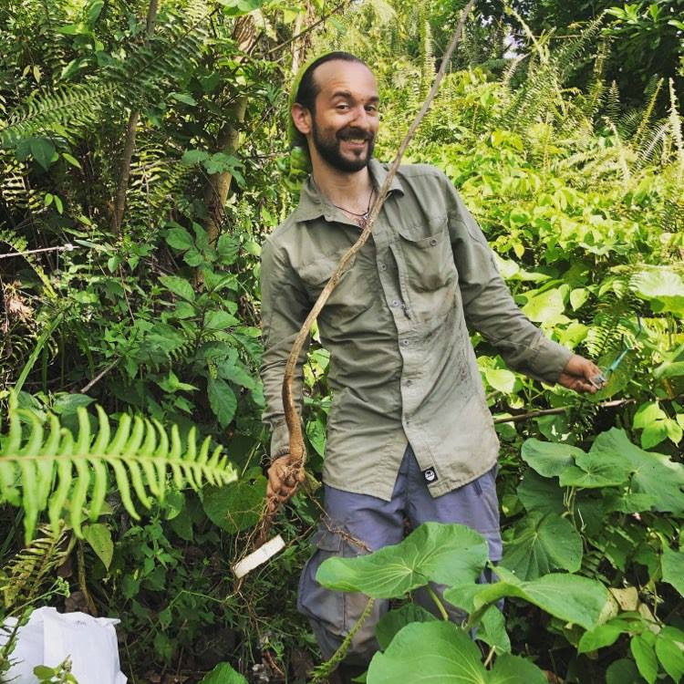
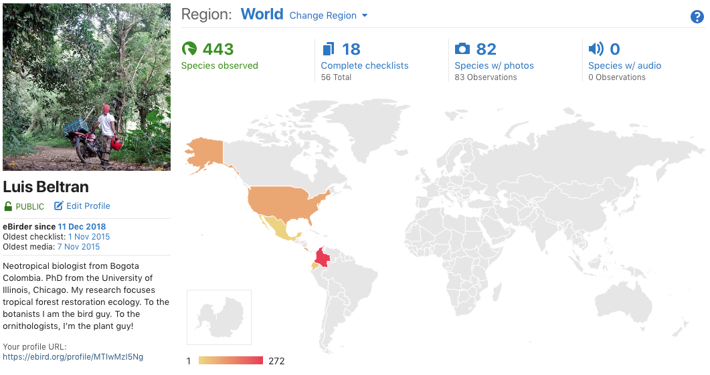
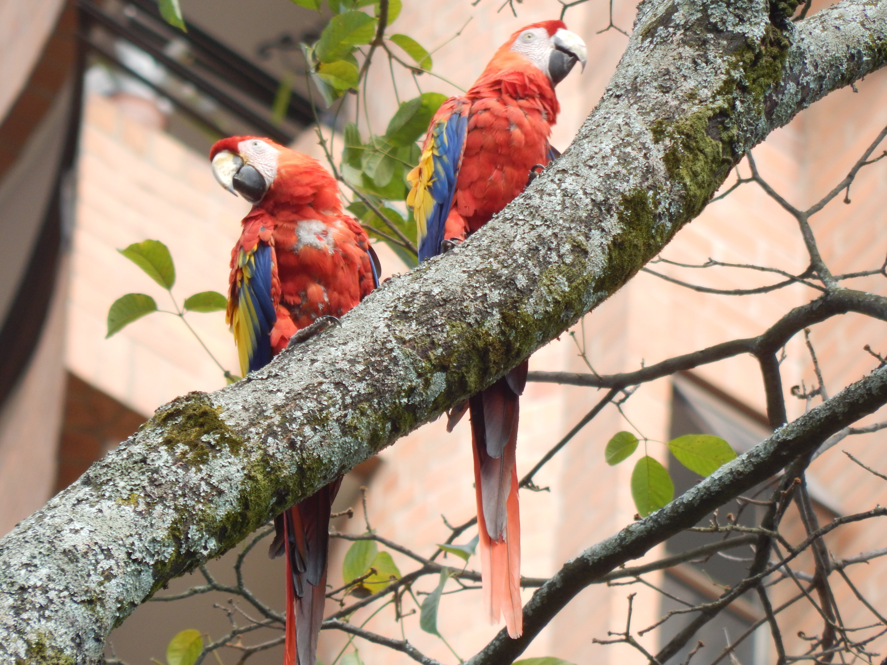

TROPICAL RESTORATION ECOLOGIST
|  |
|
As part of my work as a biologist, I am keen to contributing to wildlife sightings databases such as iNaturalist and Ebird. For those of you that do not yet partake in this practice, it is a phenomenal, adrenaline-filled way of learning the species around you. This basic of knowledge of "who is here" is also the very first step towards ecological research or action of any kind.
|

 |